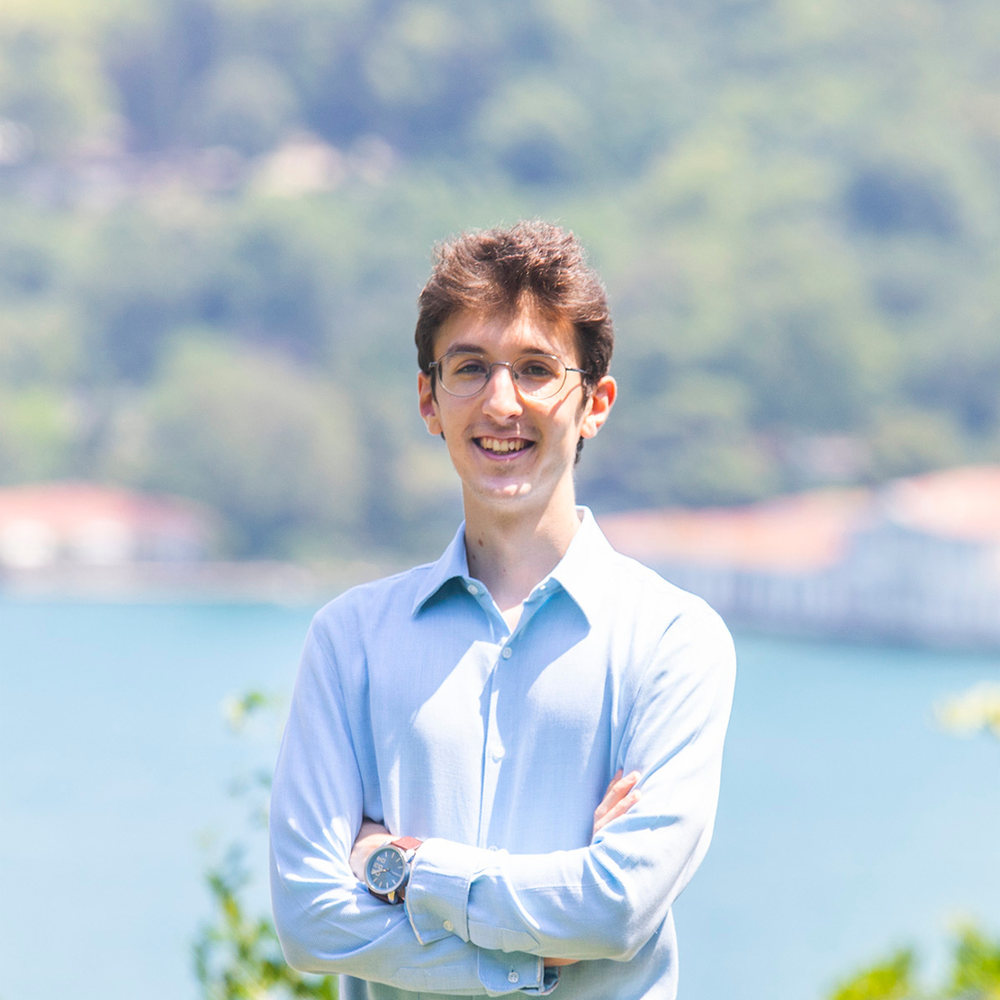
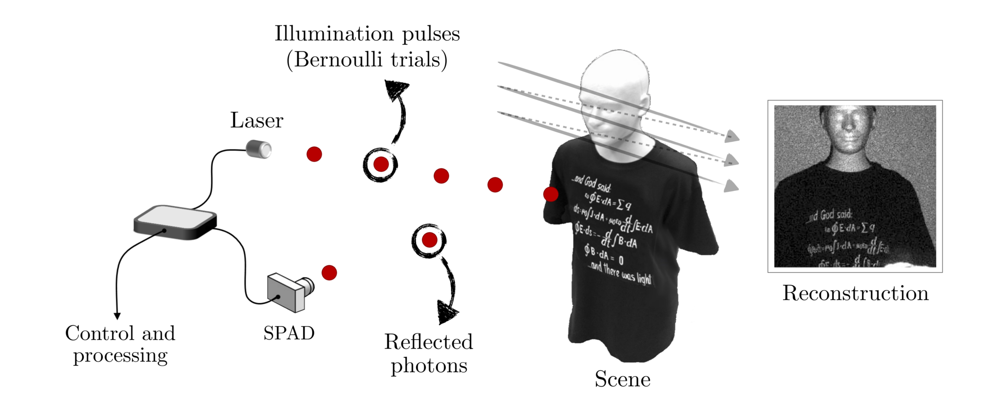

I am currently a second-year graduate student at the Electrical Engineering and Computer Science (EECS) department of Massachusetts Institute of Technology (MIT), supervised by Prof. Gregory W. Wornell. I obtained my Bahcelor of Science degree from the Electrical and Electronics Engineering department of Boğaziçi University. My research interests span the fields of computer vision and computational imaging.
Email: medin[at]mit.edu, medin[at]ieee.org
Experience

Massachusetts Institute of Technology, Cambridge, MA (2019- )
• Supervised by Prof. Gregory W. Wornell.
Boğaziçi University, Istanbul, Turkey (2018-2019)
• Supervised by Prof. Bülent Sankur.
Boston University, Boston, MA (2017-2018)
• Supervised by Prof. Vivek K Goyal.
Education
Boğaziçi University, Istanbul, Turkey (2014-2019)
• Bachelor of Science in Electrical and Electronics Engineering
• Minor in Economics
Boston University, Boston, MA (2016)
• Study Abroad in Electrical and Computer Engineering
Research
• Bernoulli Parameter Estimation
Supervised by Prof. Vivek K Goyal at Boston University.
Active imaging systems aim to reconstruct an image of a scene using active illumination sources. Under these systems, periodic illumination pulses sent from the source can either be absorbed by the scene or reflect back from it, depending on the reflectivities of the illuminated scene patches. Representing the probability of reflection from each scene patch as a Bernoulli parameter, the image acquisition process can be modeled as a problem of estimating arrays of Bernoulli parameters. In this setting, varying resources across multiple scene patches can yield significant improvements in acquisition efficiency. Motivated by this, we aim to develop an adaptive acquisition strategy that achieves such performance improvements.
Publications
• Journal Publications
Beyond Binomial and Negative Binomial: Adaptation in Bernoulli Parameter Estimation,
Published in IEEE Transactions on Computational Imaging, April 2019.
• Conference Publications
Optimal Stopping Times for Estimating Bernoulli Parameters with Applications to Active Imaging,
Presented at 2018 IEEE International Conference on Acoustics, Speech and Signal Processing (ICASSP), Calgary, AB, Canada.
© 2020 Safa C. Medin